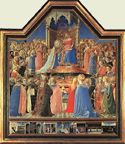

 |
|---|
[88179] De ordine agendi, arg. 1 Ad III sic proceditur; videtur quod in creaturis non sit ordo agencium. Quod enim agit sine medio est perfeccius agens quam quod agit per medium. Set Deus est agens potentissimum. Ergo non agit per medium, et ita una creatura non agit in aliam.
[88180] De ordine agendi, arg. 2 Praeterea de ratione agentis est ut faciat sibi simile, set id ad cujus similitudinem fit aliquid est exemplar. Si igitur una creatura sit causa agens respectu alterius, sequeretur quod digniora in entibus sunt exemplaria inferiorum, quod reprobat Dionysius quinto capitulo de divinis nominibus.
[88181] De ordine agendi, arg. 3 Praeterea agens et finis incidunt in idem specie, ut dicitur in secundo phisicorum. Si igitur una creatura est causa activa alterius, una erit causa finalis alterius quod videtur esse contra id quod Proverb. XVI: universa propter semetipsum operatur dominus.
[88182] De ordine agendi, s. c. Set contra est quod dicit apostolus, Rom. XIII: que a Deo sunt ordinata sunt. Et Dionysius dicit quod lex divinitatis est per superiora inferiora reducere in se. Una ergo creatura agit in aliam.
[88183] De ordine agendi, co. Respondeo dicendum quod quidam loquentes in lege Maurorum posuerunt quod nulla creatura habet aliquam actionem, dicentes quod ignis non calefacit, set Deus in igne. Set secundum hoc frustra essent attribute rebus virtutes active, et qualitates, et forme. Et ideo dicendum quod ipsa inequalitas constituta per divinam sapientiam in rebus creatis, ut dictum est, exigit quod una creatura agat in aliam. Secundum hoc enim attenditur in creaturis inequalitas quod una est perfeccior altera; perfeccius autem comparatur ad minus perfectum, sicut actus ad potentiam. Est autem de ratione existentis in actu quod agat in id quod est in potentia. Et sic necesse est quod una creatura agat in aliam. Set sicut creatura esse in actu participat a Deo qui est purus actus, ita et virtutem agendi participat a Deo et agit ejus virtute sicut causa secunda virtute cause prime.
[88184] De ordine agendi, ad 1 Ad primum ergo dicendum quod omnia quecumque fiunt per actionem creature, Deus posset facere sine creatura. Non ergo est ex defectu potentie ejus quod mediante creatura agit, set ex habundancia bonitatis ipsius, ex qua provenit quod non solum comunicat creature quod sit in se bona, set hanc dignitatem ut sit aliis causa bonitatis.
[88185] De ordine agendi, ad 2 Ad secundum dicendum quod oppinio illorum reprobatur a Dionysio, qui ponebant quedam intellectualia separata esse prima exemplaria. Nam primum exemplar omnium Deus est. Nil tamen prohibet secundario unam creaturam esse exemplar alterius.
[88186] De ordine agendi, ad 3 Ad tertium dicendum quod finis ultimus omnium Deus est; sunt tamen et fines alii sub isto fine, secundum quod una creatura ad aliam ordinatur ut ad finem, imperfecciora scilicet ad perfecciora, ut materia ad formam, elementa ad mixta, plante ad animalia, animalia ad homines ut habetur Genesi, I. Et sic patet quod ordo universi attenditur secundum quod una creatura agit in aliam, et secundum quod una fit ad similitudinem alterius, et secundum quod una est finis alterius.